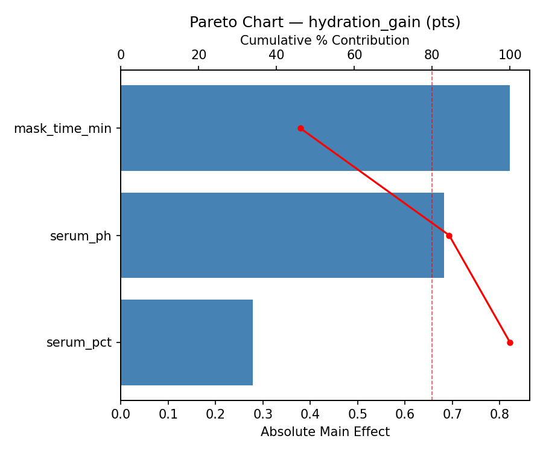
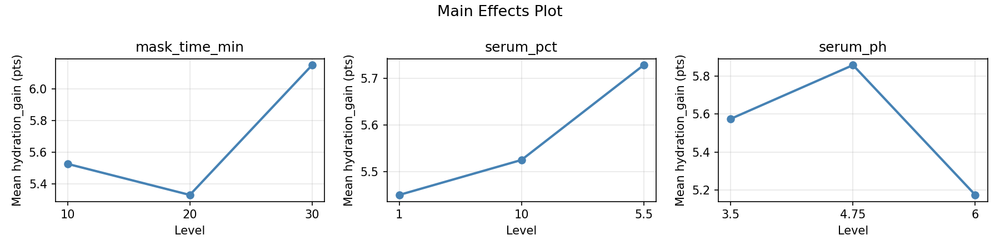
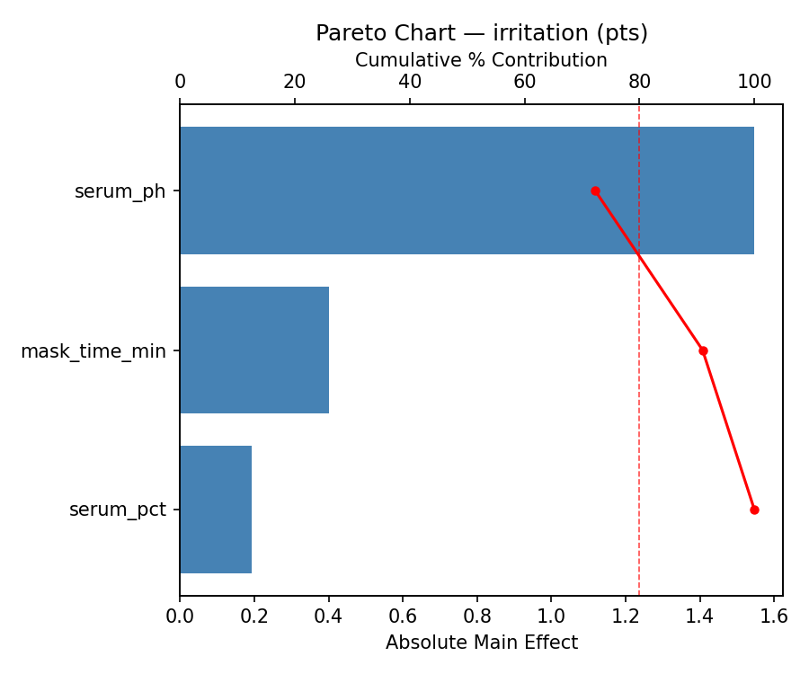
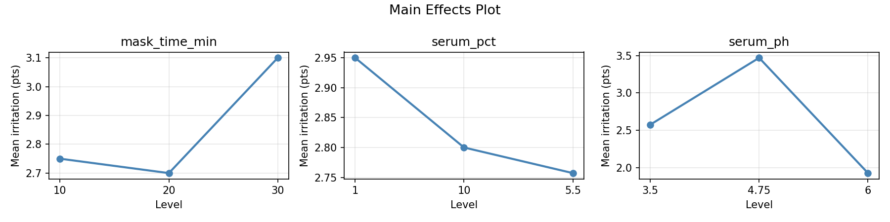
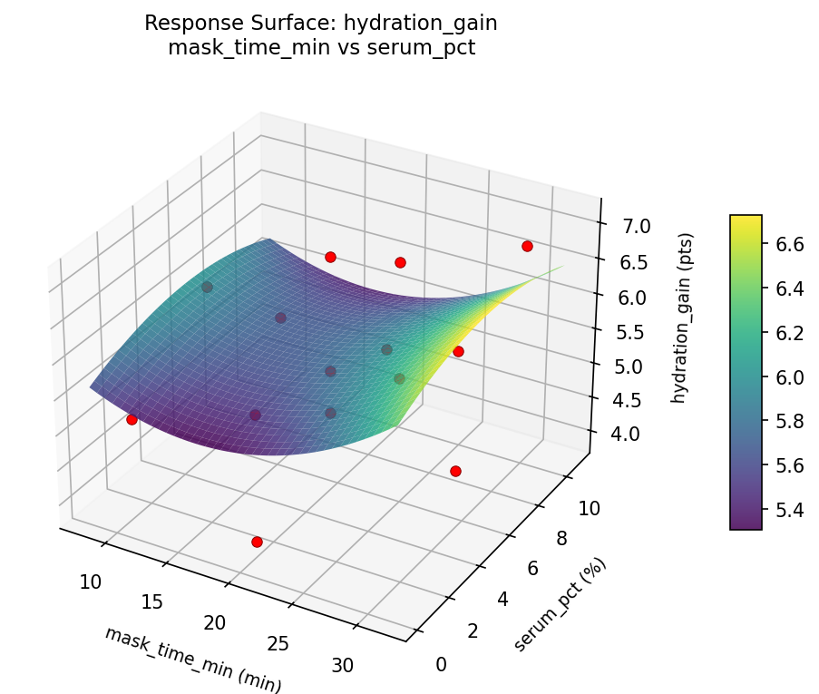
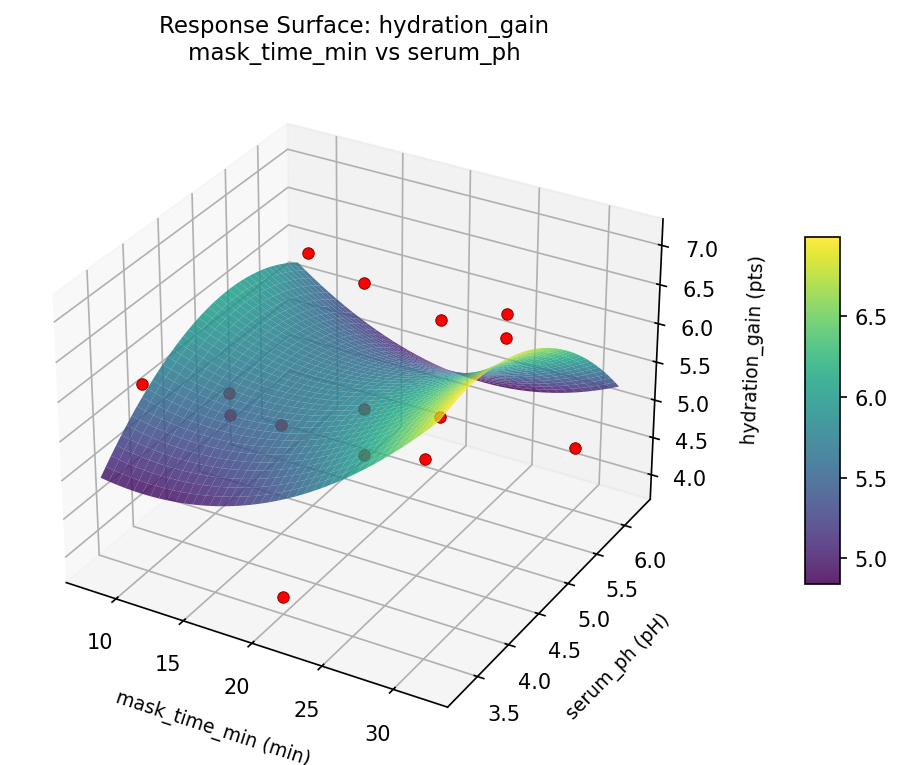
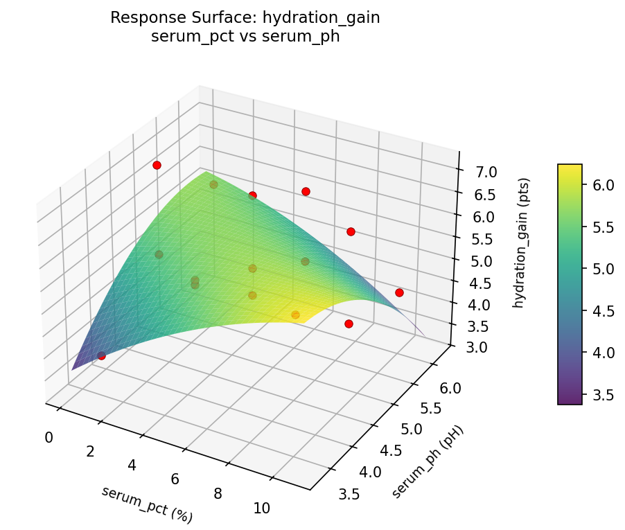
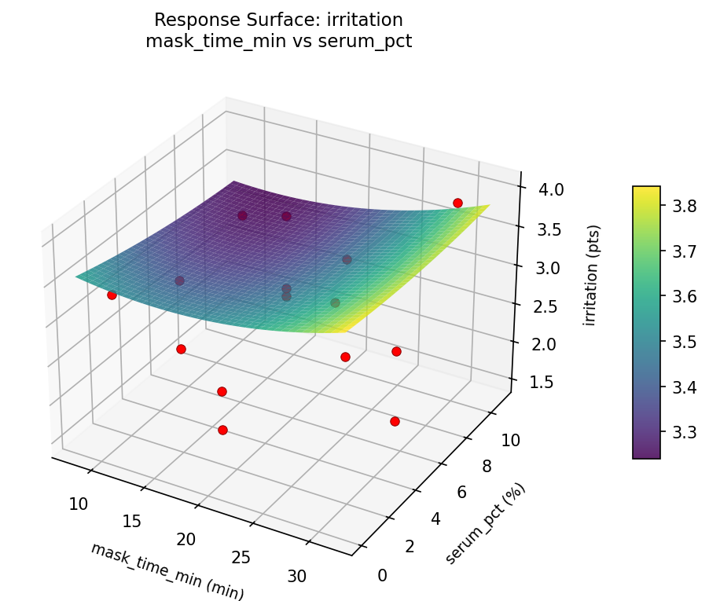
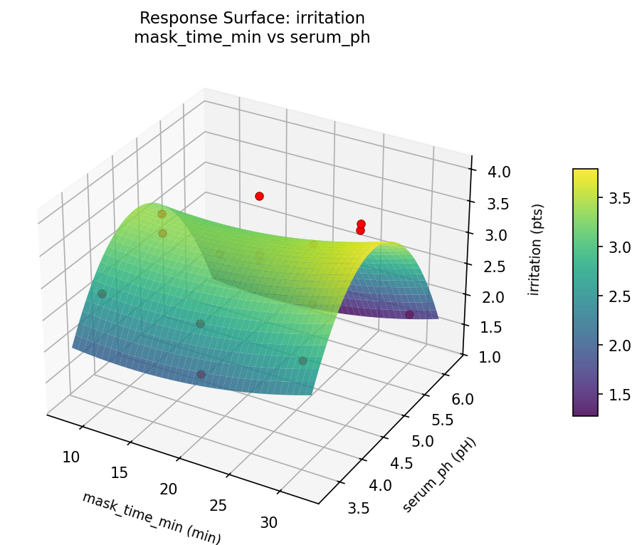
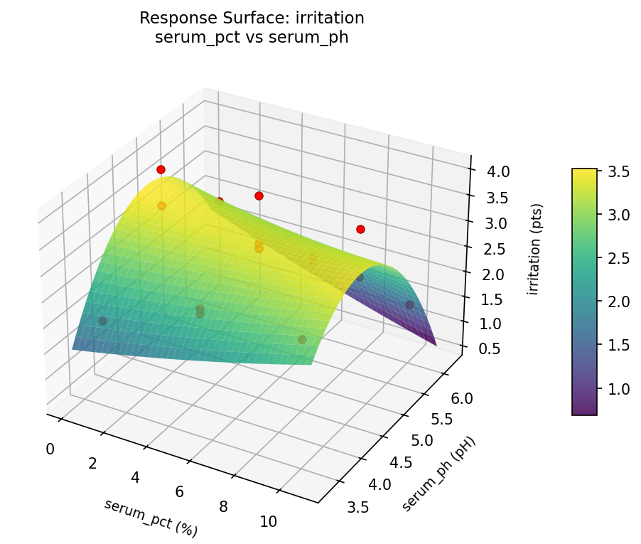

Summary
This experiment investigates face mask hydration treatment. Box-Behnken design to maximize skin hydration and minimize irritation by tuning sheet mask time, serum concentration, and active ingredient pH.
The design varies 3 factors: mask time min (min), ranging from 10 to 30, serum pct (%), ranging from 1 to 10, and serum ph (pH), ranging from 3.5 to 6.0. The goal is to optimize 2 responses: hydration gain (pts) (maximize) and irritation (pts) (minimize). Fixed conditions held constant across all runs include mask material = biocellulose, active = niacinamide.
A Box-Behnken design was chosen because it efficiently fits quadratic models with 3 continuous factors while avoiding extreme corner combinations — requiring only 15 runs instead of the 8 needed for a full factorial at two levels.
Quadratic response surface models were fitted to capture potential curvature and factor interactions. The RSM contour plots below visualize how pairs of factors jointly affect each response.
Key Findings
For hydration gain, the most influential factors were mask time min (46.1%), serum ph (38.3%), serum pct (15.6%). The best observed value was 7.1 (at mask time min = 30, serum pct = 10, serum ph = 4.75).
For irritation, the most influential factors were serum ph (72.3%), mask time min (18.7%), serum pct (9.0%). The best observed value was 1.5 (at mask time min = 20, serum pct = 1, serum ph = 6).
Recommended Next Steps
- Run confirmation experiments at the predicted optimal settings to validate the model.
- Consider whether any fixed factors should be varied in a future study.
Experimental Setup
Factors
| Factor | Low | High | Unit |
|---|
mask_time_min | 10 | 30 | min |
serum_pct | 1 | 10 | % |
serum_ph | 3.5 | 6.0 | pH |
Fixed: mask_material = biocellulose, active = niacinamide
Responses
| Response | Direction | Unit |
|---|
hydration_gain | ↑ maximize | pts |
irritation | ↓ minimize | pts |
Configuration
{
"metadata": {
"name": "Face Mask Hydration Treatment",
"description": "Box-Behnken design to maximize skin hydration and minimize irritation by tuning sheet mask time, serum concentration, and active ingredient pH"
},
"factors": [
{
"name": "mask_time_min",
"levels": [
"10",
"30"
],
"type": "continuous",
"unit": "min"
},
{
"name": "serum_pct",
"levels": [
"1",
"10"
],
"type": "continuous",
"unit": "%"
},
{
"name": "serum_ph",
"levels": [
"3.5",
"6.0"
],
"type": "continuous",
"unit": "pH"
}
],
"fixed_factors": {
"mask_material": "biocellulose",
"active": "niacinamide"
},
"responses": [
{
"name": "hydration_gain",
"optimize": "maximize",
"unit": "pts"
},
{
"name": "irritation",
"optimize": "minimize",
"unit": "pts"
}
],
"settings": {
"operation": "box_behnken",
"test_script": "use_cases/227_face_mask_hydration/sim.sh"
}
}
Experimental Matrix
The Box-Behnken Design produces 15 runs. Each row is one experiment with specific factor settings.
| Run | mask_time_min | serum_pct | serum_ph |
|---|
| 1 | 20 | 1 | 3.5 |
| 2 | 20 | 5.5 | 4.75 |
| 3 | 30 | 5.5 | 6 |
| 4 | 30 | 5.5 | 3.5 |
| 5 | 20 | 5.5 | 4.75 |
| 6 | 20 | 5.5 | 4.75 |
| 7 | 10 | 5.5 | 6 |
| 8 | 30 | 1 | 4.75 |
| 9 | 20 | 1 | 6 |
| 10 | 30 | 10 | 4.75 |
| 11 | 10 | 5.5 | 3.5 |
| 12 | 20 | 10 | 6 |
| 13 | 10 | 1 | 4.75 |
| 14 | 10 | 10 | 4.75 |
| 15 | 20 | 10 | 3.5 |
Step-by-Step Workflow
1
Preview the design
$ python doe.py info --config use_cases/227_face_mask_hydration/config.json
2
Generate the runner script
$ python doe.py generate --config use_cases/227_face_mask_hydration/config.json \
--output use_cases/227_face_mask_hydration/results/run.sh --seed 42
3
Execute the experiments
$ bash use_cases/227_face_mask_hydration/results/run.sh
4
Analyze results
$ python doe.py analyze --config use_cases/227_face_mask_hydration/config.json
5
Get optimization recommendations
$ python doe.py optimize --config use_cases/227_face_mask_hydration/config.json
6
Generate the HTML report
$ python doe.py report --config use_cases/227_face_mask_hydration/config.json \
--output use_cases/227_face_mask_hydration/results/report.html
Features Exercised
| Feature | Value |
|---|
| Design type | box_behnken |
| Factor types | continuous (all 3) |
| Arg style | double-dash |
| Responses | 2 (hydration_gain ↑, irritation ↓) |
| Total runs | 15 |
Analysis Results
Generated from actual experiment runs using the DOE Helper Tool.
Response: hydration_gain
Top factors: mask_time_min (46.1%), serum_ph (38.3%), serum_pct (15.6%).
Pareto Chart

Main Effects Plot

Response: irritation
Top factors: serum_ph (72.3%), mask_time_min (18.7%), serum_pct (9.0%).
Pareto Chart

Main Effects Plot

Response Surface Plots
3D surfaces fitted with quadratic RSM. Red dots are observed data points.
hydration gain mask time min vs serum pct

hydration gain mask time min vs serum ph

hydration gain serum pct vs serum ph

irritation mask time min vs serum pct

irritation mask time min vs serum ph

irritation serum pct vs serum ph

Full Analysis Output
RSM surface: rsm_hydration_gain_mask_time_min_vs_serum_pct.png
RSM surface: rsm_hydration_gain_mask_time_min_vs_serum_ph.png
RSM surface: rsm_hydration_gain_serum_pct_vs_serum_ph.png
RSM surface: rsm_irritation_mask_time_min_vs_serum_pct.png
RSM surface: rsm_irritation_mask_time_min_vs_serum_ph.png
RSM surface: rsm_irritation_serum_pct_vs_serum_ph.png
=== Main Effects: hydration_gain ===
Factor Effect Std Error % Contribution
--------------------------------------------------------------
mask_time_min 0.8214 0.2571 46.1%
serum_ph 0.6821 0.2571 38.3%
serum_pct 0.2786 0.2571 15.6%
=== Summary Statistics: hydration_gain ===
mask_time_min:
Level N Mean Std Min Max
------------------------------------------------------------
10 4 5.5250 0.6752 4.8000 6.1000
20 7 5.3286 1.0579 3.9000 7.0000
30 4 6.1500 1.1619 4.5000 7.1000
serum_pct:
Level N Mean Std Min Max
------------------------------------------------------------
1 4 5.4500 1.3304 3.9000 7.1000
10 4 5.5250 1.1177 4.4000 6.8000
5.5 7 5.7286 0.8751 4.5000 7.0000
serum_ph:
Level N Mean Std Min Max
------------------------------------------------------------
3.5 4 5.5750 1.1177 3.9000 6.2000
4.75 7 5.8571 1.0612 4.8000 7.1000
6 4 5.1750 0.8539 4.4000 6.1000
=== Main Effects: irritation ===
Factor Effect Std Error % Contribution
--------------------------------------------------------------
serum_ph 1.5464 0.2041 72.3%
mask_time_min 0.4000 0.2041 18.7%
serum_pct 0.1929 0.2041 9.0%
=== Summary Statistics: irritation ===
mask_time_min:
Level N Mean Std Min Max
------------------------------------------------------------
10 4 2.7500 0.6028 1.9000 3.3000
20 7 2.7000 0.8083 1.5000 4.0000
30 4 3.1000 1.0488 1.8000 4.0000
serum_pct:
Level N Mean Std Min Max
------------------------------------------------------------
1 4 2.9500 0.8813 2.0000 4.0000
10 4 2.8000 0.9899 1.5000 3.9000
5.5 7 2.7571 0.7502 1.8000 4.0000
serum_ph:
Level N Mean Std Min Max
------------------------------------------------------------
3.5 4 2.5750 0.3862 2.0000 2.8000
4.75 7 3.4714 0.4751 3.0000 4.0000
6 4 1.9250 0.4193 1.5000 2.5000
Pareto chart (hydration_gain): use_cases/227_face_mask_hydration/results/analysis/pareto_hydration_gain.png
Pareto chart (irritation): use_cases/227_face_mask_hydration/results/analysis/pareto_irritation.png
Main effects (hydration_gain): use_cases/227_face_mask_hydration/results/analysis/main_effects_hydration_gain.png
Main effects (irritation): use_cases/227_face_mask_hydration/results/analysis/main_effects_irritation.png
Optimization Recommendations
=== Optimization: hydration_gain ===
Direction: maximize
Best observed run: #10
mask_time_min = 30
serum_pct = 10
serum_ph = 4.75
Value: 7.1
RSM Model (linear, R² = 0.4238, Adj R² = 0.2667):
Coefficients:
intercept +5.6000
mask_time_min +0.5375
serum_pct +0.6375
serum_ph -0.2000
RSM Model (quadratic, R² = 0.6117, Adj R² = -0.0872):
Coefficients:
intercept +5.5667
mask_time_min +0.5375
serum_pct +0.6375
serum_ph -0.2000
mask_time_min*serum_pct +0.3750
mask_time_min*serum_ph +0.5000
serum_pct*serum_ph -0.3500
mask_time_min^2 +0.2792
serum_pct^2 +0.0292
serum_ph^2 -0.2458
Curvature analysis:
mask_time_min coef=+0.2792 convex (has a minimum)
serum_ph coef=-0.2458 concave (has a maximum)
serum_pct coef=+0.0292 negligible curvature
Notable interactions:
mask_time_min*serum_ph coef=+0.5000 (synergistic)
mask_time_min*serum_pct coef=+0.3750 (synergistic)
serum_pct*serum_ph coef=-0.3500 (antagonistic)
Predicted optimum (from linear model):
mask_time_min = 30
serum_pct = 10
serum_ph = 4.75
Predicted value: 6.7750
Model quality: Weak fit — consider adding center points or using a different design.
Factor importance:
1. serum_pct (effect: 1.3, contribution: 45.2%)
2. mask_time_min (effect: 1.1, contribution: 38.1%)
3. serum_ph (effect: 0.5, contribution: 16.6%)
=== Optimization: irritation ===
Direction: minimize
Best observed run: #9
mask_time_min = 20
serum_pct = 1
serum_ph = 6
Value: 1.5
RSM Model (linear, R² = 0.4474, Adj R² = 0.2968):
Coefficients:
intercept +2.8200
mask_time_min +0.0500
serum_pct +0.5625
serum_ph -0.4125
RSM Model (quadratic, R² = 0.8796, Adj R² = 0.6630):
Coefficients:
intercept +3.4000
mask_time_min +0.0500
serum_pct +0.5625
serum_ph -0.4125
mask_time_min*serum_pct +0.3500
mask_time_min*serum_ph +0.1000
serum_pct*serum_ph -0.1750
mask_time_min^2 -0.2625
serum_pct^2 +0.0625
serum_ph^2 -0.8875
Curvature analysis:
serum_ph coef=-0.8875 concave (has a maximum)
mask_time_min coef=-0.2625 concave (has a maximum)
serum_pct coef=+0.0625 negligible curvature
Notable interactions:
mask_time_min*serum_pct coef=+0.3500 (synergistic)
Predicted optimum (from quadratic model):
mask_time_min = 30
serum_pct = 10
serum_ph = 4.75
Predicted value: 4.1625
Model quality: Good fit — general trends are captured, some noise remains.
Factor importance:
1. serum_ph (effect: 1.3, contribution: 48.3%)
2. serum_pct (effect: 1.1, contribution: 42.2%)
3. mask_time_min (effect: 0.3, contribution: 9.5%)